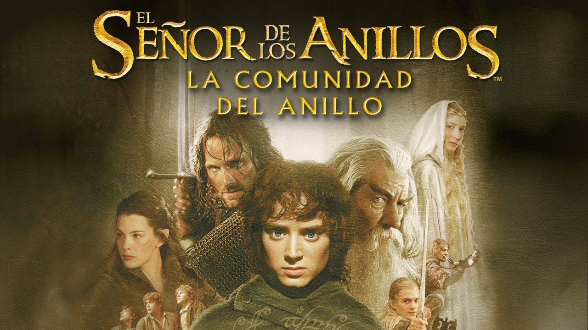
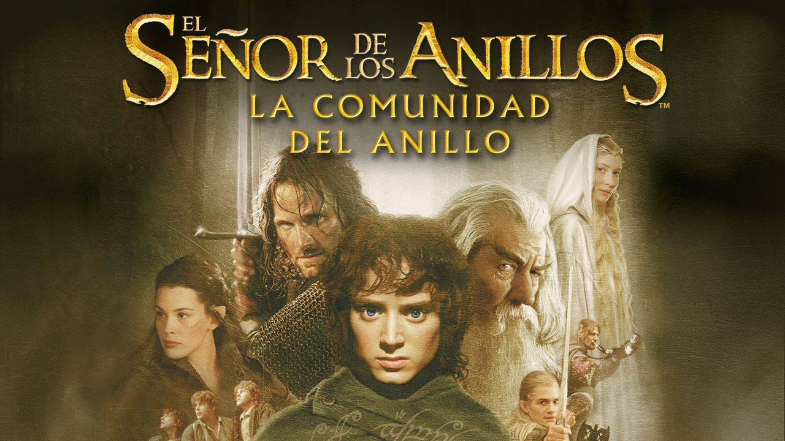

Si quieres comprarla o alquilarla pincha aquí
Si quieres comprarla o alquilarla pincha aquí
En este episodio de la trilogía, el joven y tímido hobbit, Frodo Bolsón, hereda un anillo. Lejos de ser una simple baratija, se trata
del Anillo único, un instrumento de poder que permitiría a Sauron, el Señor Oscuro, reinar en la Tierra Media y convertir en esclavos
a sus habitantes. Frodo, con la ayuda de una Compañía formada por hobbits, hombres, un mago, un enano y un elfo, tiene la misión
de llevar el Anillo viajando por toda la Tierra Media hasta el Monte del Destino, lugar donde fue forjado, y destruirlo para siempre.
Un tal periplo supone aventurarse muy lejos en Mordor, la tierra del Señor Oscuro, donde se concentra su ejército de orcos maléficos...
La Compañía, no solo debe combatir las fuerzas externas del mal, sino también las fuerzas internas y la influencia corruptora
que ejerce el propio anillo. El final de la historia está íntimamente ligado a la suerte de la Compañía.
Tráiler
 

Si quieres comprarla o alquilarla pincha aquí